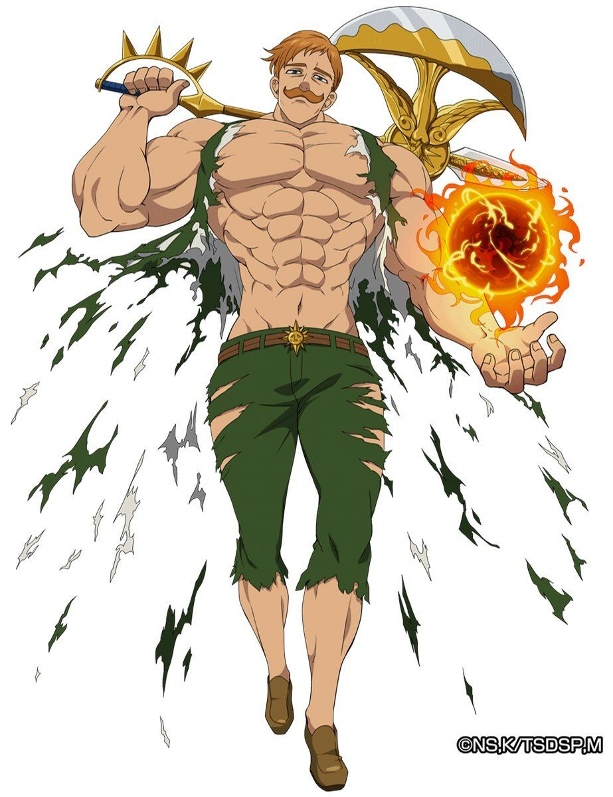

Escanor é um membro dos Sete Pecados Capitais e é conhecido como o Pecado do Orgulho do Leão. Ele é famoso por adquirir um imenso poder durante o dia, que gradualmente diminui com pôr do sol.
Escanor durante o dia, tem uma personalidade arrogante e orgulhosa. Quando ele enfrenta um inimigo ele está sempre confiante de que vai vencer, na batalha contra Estarossa, Escanor fala que não sente ódio de seres inferiores a ele, e sim pena. Já de note, Escanor tem uma personalidade sensível, gentil e calma, e as vezes é um pouco medroso. Escanor tem uma grande paixão por Merlin, nomeando o bar que ele criou depois de os pecados se separarem, de: "Minha doce gula" que é o pecado da Merlin.